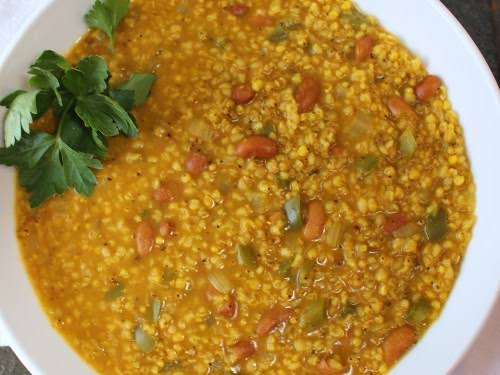
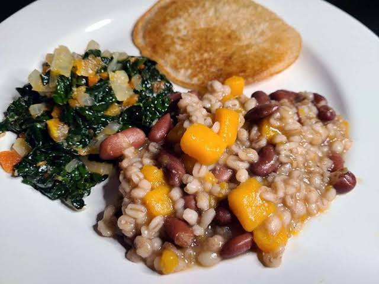
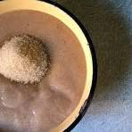
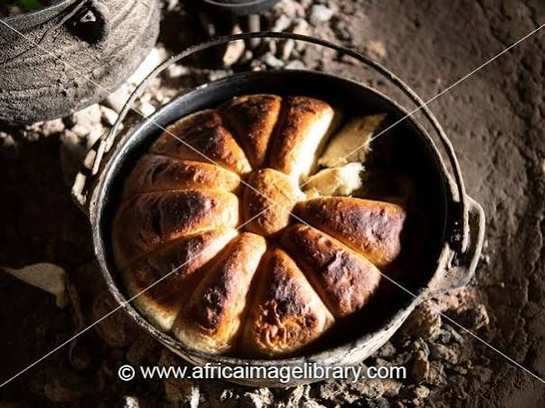

Tourist Destinations

Maletsunyane Falls
Located near Semonkong, the waterfall creates a constant spray that nourishes lush greenery and forms frequent rainbows on sunny days.

Thaba Bosiu
A flat-topped sandstone plateau covering an area of approximately 2 square kilometers, situated about 24 kilometers east of Maseru.

Kome Cave Dwellings
Constructed using mud and sandstone blocks, featuring smooth, mud-plastered walls and thatched roofs built directly into natural rock cavities.

Katse Dam
A massive concrete arch dam built on the Malibamatso River and serves as a centerpiece of the Lesotho Highlands Water Project.
Traditional Sesotho Cuisine
| Sesotho Food | Description | Image |
|---|---|---|
| Likhobe | A traditional, hearty Sesotho dish made by boiling whole dried maize kernels together with beans and sorghum or wheat until tender. |  |
| Nyekoe | A rich, traditional one-pot dish cooked using sorghum, beans, and dried pumpkin, simmered together over a slow fire with an earthy flavor. |  |
| Motoho | A popular fermented sorghum porridge with a smooth texture and a signature tangy, sour taste, enjoyed as a refreshing beverage or light meal. |  |
| Mala le Moholu | A classic Basotho comfort dish consisting of slow-cooked beef or sheep tripe (mohodu) and intestines (mala) served in a savory broth. |  |
| Bohobe ba Lipoho / Likhoali | A staple Basotho steamed bread made from a simple dough, gently steamed inside a pot until soft and fluffy. |  |